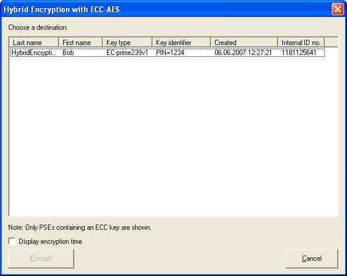
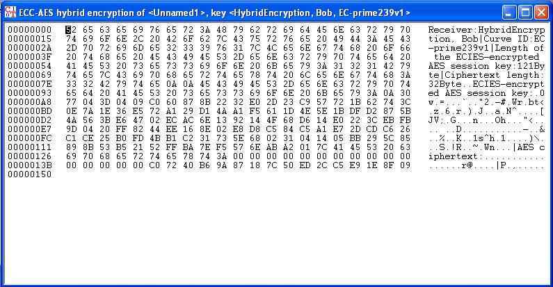

This dialog is supposed to let you choose the public key of the receiver that is based on Elliptic Curves (ECC). You use this key to encrypt the session key which, in turn, was used to encrypt the document.
The hybrid scheme ECIES uses the ECDH- and AES algorithm. Hybrid encryption is the most widely deployed method of transferring encrypted data. More details on the hybrid encryption method and on elliptic curves (ECC) can be found in the CT Book.
If you have not already created an asymmetric key, you have to do this before calling the dialog for ECIES encryption [a user Bob with the ECC key "Hybrid Encryption" is deployed by default]:
In the menu of CrypTool under Digital Signatures/PKI \ PKI \ Key Generation you can find appropriate tools for generating ECC key pairs and storing them in the CrypTool database (PSE file).
After you have a valid ECC key pair, you can open a document and start the encryption dialog through the menu selection Encrypt/Decrypt \ Hybrid \ ECC-AES Encryption.

After selecting a key pair and clicking the button Encrypt, you can start the encryption.
The required encryption time can be shown by activating the checkbox.
The encrypted document is shown in the CrypTool main window:
This data can then be used as input for hybrid decryption with ECC-AES, which inverts the whole encryption process.